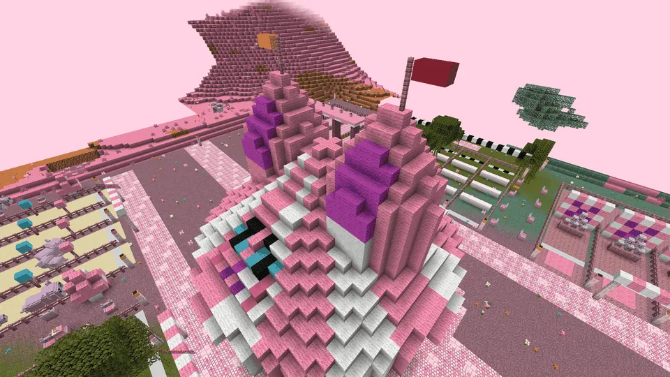

Een grote circustent met zes speelvelden eromheen: de Grote Zeskamp (Guhweides, Roze pluisjes)
KnabbelspelenGuhweides, Roze pluisjesGuhweides, Roze pluisjes
A circus tent with guh-ear tops and six play fields for the zeskamp.Een circustent met guhoren als tentpunten en zes speelvelden voor de zeskamp.
The circus tentDe circustent
In the Guhweides and the Roze pluisjes: a big pink-and-white striped circus tent whose two tent tops are guh ears (with flags), with a guh face on its roof, four entrances, a circus ring with Juf Vahoegsakee in the middle and tiers of seats. Around it lie six fenced play fields with four lanes each, an entrance arch and a floating board per event.
In de Guhweides en de Roze pluisjes: een grote roze-wit gestreepte circustent waarvan de twee tentpunten guhoren zijn (met vlaggetjes), met een guhgezicht op het dak, vier ingangen, een piste met Juf Vahoegsakee in het midden en tribunes. Eromheen liggen zes omheinde speelvelden met elk vier baantjes, een ingangsboog en een zwevend bord per onderdeel.
- WhereWaar
- Guhweides, Roze pluisjes
- Guh
- Juf Vahoegsakee
- CoinMunt
 spelenlintje
spelenlintje

Six eventsZes onderdelen
| EventOnderdeel | What you doWat je doet | ScoreScore |
|---|---|---|
| Knabbelhappen | Kaasknabbels swing on strings from a striped beam: bite as many as you can (a golden one is 3). Nice and vahoeg!Kaasknabbels zwaaien aan touwtjes aan een gestreepte balk: hap er zoveel je kunt (een gouden telt 3). Lekker vahoeg! | pointspunten |
| Zaklopen | In a guh sack: every jump is a hop forward, over fluffy bumps to the finish.In een guhzak: elke sprong is een hupje vooruit, over pluizige bulten naar de finish. | timetijd |
| Mika-blikgooien | A pyramid of tins with Mika faces and 8 pluisballen. A tin you hit falls, and so does every tin on top of it. All down: +20 and a new pyramid.Een piramide van blikken met Mika-koppen en 8 pluisballen. Een blik dat je raakt valt, en alles wat erop staat ook. Alles om: +20 en een nieuwe piramide. | pointspunten |
| Eierlopen | A knabbelei on a spoon through a slalom of 4 flags. Too wild (running, sharp turns, jumping) and the egg drops: back to the last flag.Een knabbelei op een lepel door een slalom van 4 vlaggetjes. Te wild (rennen, scherpe bochten, springen) en het ei valt: terug naar het laatste vlaggetje. | timetijd |
| Spijkerpoepen | A big knabbelspijker dangles on a string behind your guh belt and swings with every step. Crouch still above a kaasmelk bottle: plonk! Three bottles.Een grote knabbelspijker bungelt aan een touwtje achter je guhriem en zwaait mee met elke stap. Sta stil gebukt boven een kaasmelkfles: plonk! Drie flessen. | timetijd |
| Guhguhtje prik | Blindfolded (a pink cloth over your eyes) and spun round three times: pin the tail on the big guh board. The closer, the more points (0 to 1000).Geblinddoekt (een roze doek voor je ogen) en drie keer rondgedraaid: prik het staartje op het grote guhbord. Hoe dichterbij, hoe meer punten (0 tot 1000). | closenesshoe dichtbij |
Play one event on its own, or all six in a row as the Grote Zeskamp: every event gives 0 to 1000 zeskamp points (for the timed ones: the faster, the more), so 6000 is the maximum; the score table is in Juf Vahoegsakee's screen. Friends may join in (up to four, each in their own lane): whoever opens the round waits 15 seconds for them. Spelenlintjes: 1 to 3 for an event, 2 plus one per 1000 points for the Zeskamp, always +1, and +1 more for winning against your friends.
Speel één onderdeel los, of alle zes achter elkaar als de Grote Zeskamp: elk onderdeel geeft 0 tot 1000 zeskamppunten (bij de tijden: hoe sneller, hoe meer), dus 6000 is het maximum; de scoretabel staat in het scherm van Juf Vahoegsakee. Vriendjes mogen meedoen (tot vier, ieder in een eigen baantje): wie de ronde opent wacht 15 seconden op ze. Spelenlintjes: 1 tot 3 voor een onderdeel, 2 plus één per 1000 punten voor de Zeskamp, altijd +1, en nog +1 als je van je vriendjes wint.